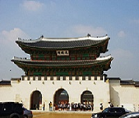

메뉴열기
추천여행지
여행 일정 만들기
여행 후기
어디에서
강남구
강북구
강서구
검색
추천여행지 > "경복궁" 검색결과

경복궁 (Gyeongbokgung Palace)
좋아요! (
100
)
조선 왕조의 법궁, 조선의 중심지 조선시대에 만들어진 다섯 개의 궁궐 중 첫 번째로 만들어진 곳으로, 조선 왕조의 상징이라 할 수 있다. 현재 많은 외국인 관광객 뿐만 아니라 내국인 관광객도 많이 찾는 곳이기도 하다.
68개의 포스트 - 한국 서울특별시
경복궁역 (Gyeongbokgung Station)
좋아요! (
21
)
경복궁 근처에 있는 지하철 역으로써 3호선 지하철을 여기서 탈 수 있다.
1개의 포스트 - 한국 서울특별시
창덕궁 (Changdeokgung Palace)
좋아요! (
46
)
조선왕조에서 가장 오랜기간 궁궐로 쓰인 곳
34개의 포스트 - 한국 서울특별시
경성사진관 (한옥사진관)
좋아요! (
5
)
북촌에서 가장 큰 한옥사진관, 전통돌사진, 가족사진, 공간대여, 대관
1개의 포스트 - 한국 서울특별시